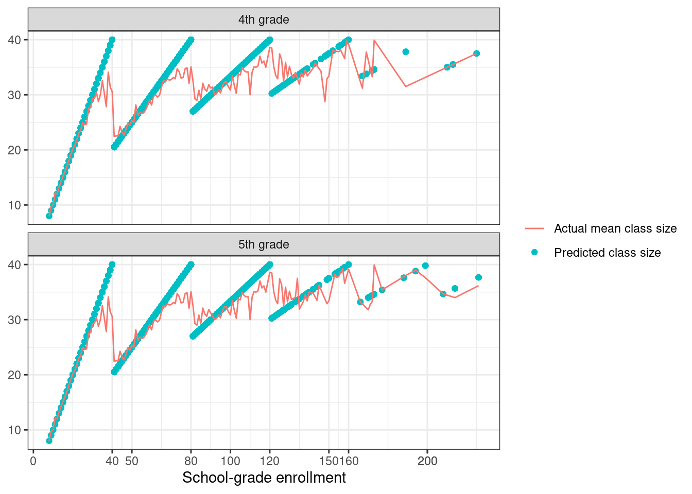

library(tidyverse)
library(data.table)
library(fixest)
library(texreg)
data4 <- haven::read_dta("data/final4.dta", encoding = "latin1")
data5 <- haven::read_dta("data/final5.dta", encoding = "latin1")
data4 <- data4 %>% mutate(
avgverb = ifelse(avgverb > 100, avgverb - 100, avgverb),
avgmath = ifelse(avgmath > 100, avgmath - 100, avgmath)) %>%
filter(classize > 1 & classize < 45 & c_size > 5) %>%
filter(c_leom == 1 & c_pik < 3)
data5 <- data5 %>% mutate(
avgverb = ifelse(avgverb > 100, avgverb - 100, avgverb),
avgmath = ifelse(avgmath > 100, avgmath - 100, avgmath)) %>%
filter(classize > 1 & classize <45 & c_size > 5) %>%
filter(c_leom == 1 & c_pik < 3)Problem set 4
Read in the data
1 Q1
I have read the QJE article.
2 Q2
We do simple regression as follows:
models <- list(
feols(avgverb ~ classize, data = data4, cluster = ~schlcode),
feols(avgmath ~ classize, data = data4, cluster = ~schlcode),
feols(avgverb ~ classize, data = data5, cluster = ~schlcode),
feols(avgmath ~ classize, data = data5, cluster = ~schlcode))
library(modelsummary)
# modelsummary(models,
# starts = TRUE,
# statistic = "({std.error})",
# gof_omit = "R2|Adj|Log|AIC|BIC|RMSE",
# output = "latex",
# coef_rename = c("c_size" = "Class Size", "(Intercept)" = "Constant"),
# title = "Bivariate Regressions of Test Scores on Class Size",
# notes = "*p < 0.05, ** p < 0.01, *** p < 0.001",
# add_rows = tibble(
# Term = "Observations",
# `Model 1` = nobs(models[[1]]),
# `Model 2` = nobs(models[[2]]),
# `Model 3` = nobs(models[[3]]),
# `Model 4` = nobs(models[[4]])
# ), output = "latex")
screenreg(models,
custom.model.names = c("Grammar - 4th", "Math - 4th", "Grammar - 5th", "Math - 5th"),
custom.coef.map = list("classize" = "Class size"),
include.adjrs = FALSE, include.proj.stats = FALSE, include.groups = FALSE)
==================================================================
Grammar - 4th Math - 4th Grammar - 5th Math - 5th
------------------------------------------------------------------
Class size 0.14 *** 0.22 *** 0.22 *** 0.33 ***
(0.03) (0.04) (0.03) (0.04)
------------------------------------------------------------------
Num. obs. 2049 2049 2019 2019
R^2 0.01 0.03 0.04 0.05
==================================================================
*** p < 0.001; ** p < 0.01; * p < 0.05The results show that larger class sizes are associated with higher test scores. This is quite counterintuitive and it is probably because of some endogeneity issue. One possible issue might be that schools are assigning underperforming students in small classes to boost their performance. In this case, the result could be biased as underperforming students will tend to get better but will still be performing less than other students.
3 Q3
We plot the predictions of Maimonides’ rule:
data4 <- data4 %>% mutate(grade = 4)
data5 <- data5 %>% mutate(grade = 5)
data <- data4 %>% bind_rows(data5)
label_map <- c("4" = "4th grade", "5" = "5th grade")
data %>%
ggplot(aes(x = c_size, y = trunc((c_size - 1) / 40) + 1)) +
geom_point() +
scale_x_continuous(name = "School-grade enrollment", breaks = c(0, 40, 50, 80, 100, 120, 150, 160, 200, 200, 250)) +
scale_y_continuous(name = "Predicted number of classes", breaks=1:6) +
facet_wrap(~grade, nrow = 2, labeller = labeller(grade = label_map)) +
theme_bw()data %>%
ggplot(aes(x = c_size, y = c_size / (trunc((c_size - 1) / 40) + 1))) +
geom_point() +
scale_x_continuous(name = "School-grade enrollment", breaks = c(0, 40, 50, 80, 100, 120, 150, 160, 200, 200, 250)) +
scale_y_continuous(name = "Predicted number of classes", breaks=seq(from=10, to = 45, by = 10)) +
facet_wrap(~grade, nrow = 2, labeller = labeller(grade = label_map)) +
theme_bw()From the figures, we can see that potential sources of variation in class size that might be useful are the discrete jumps happening around enrollment in multiples of 40. If we compare classses close to the either side of the cutoff, we could assume that these classes are similar to each other along all other dimensions except for the class size induced by the cutoff rule. Thus we could use the class size rule as the exogenous variation to study the impact of class size on other outcomes.
4 Q4
Descriptive statistics on mean class size students actually face is as follows:
data_m <- data %>%
group_by(c_size) %>%
summarise(mean_class = mean(classize, na.rm=T), .groups = "drop") %>%
rename("Mean class size" = "mean_class")
datasummary(`Mean class size` ~ mean + sd + median + min + max, data = data_m)| mean | sd | median | min | max | |
|---|---|---|---|---|---|
| Mean class size | 30.63 | 6.38 | 32.34 | 8.00 | 39.92 |
I also graph the actual and predicted average class size by enrollment as follows:
data_m <- data %>%
group_by(c_size) %>%
mutate(mean_class = mean(classize))
data_m %>%
ggplot() +
geom_point(aes(x = c_size, y = c_size / (trunc((c_size - 1) / 40) + 1), color = "Predicted class size")) +
geom_line(aes(x = c_size, y = mean_class, color = "Actual mean class size")) +
scale_x_continuous(name = "School-grade enrollment", breaks = c(0, 40, 50, 80, 100, 120, 150, 160, 200, 200, 250)) +
scale_y_continuous(name = NULL, breaks=seq(from=10, to = 45, by = 10)) +
facet_wrap(~grade, nrow = 2, labeller = labeller(grade = label_map)) +
labs(color=NULL) +
theme_bw()
By overlaying actual and predicted average class size, we can see some variations of actual class size from the predicted size. Still, we can see there is some similar pattern happening in the actual case that is analogous to the predicted class size. I did some calculations and found that about 1% of the sample are overshooters and about 3% are early splitters. It seems from the data that the early splitters usually have bit more disadvantaged students and have studens with lower test scores than the complying classes. The result is reverse for overshooters. Thus for our RDD identification strategy to work, we would need to make sure that these deviations are only marginal and there is not much cases where schools can manipulate the number of class sizes in the cutoffs.
5 Q5
Results of the RDD estimates are as follows:
library(glue)
library(gt)
# Define variables
test_score_vars <- c("avgmath", "avgverb")
bandwidths <- c(2, 5, 8, 10, 15, 20, 25, 30)
poly_degs <- 0:4
for (test_score in test_score_vars) {
# Load dataset
df <- data %>%
mutate(above_cutoff_1 = as.integer(c_size > 40))
results <- list()
for (bw in bandwidths) {
df_bw <- df %>%
filter(c_size >= (40 - bw), c_size <= (40 + bw))
for (d in poly_degs) {
# Polynomial terms
if (d > 0) {
for (i in 1:d) {
poly_var <- paste0("c_size_", i)
if (!(poly_var %in% names(df_bw))) {
df_bw[[poly_var]] <- df_bw$c_size^i
}
}
covars <- paste0("c_size_", 1:d, collapse = "+")
} else {
covars <- "1"
}
# IV Regression using fixest
formula_iv <- as.formula(glue("{test_score} ~ {covars} | classize ~ above_cutoff_1"))
iv_model <- feols(formula_iv, data = df_bw, cluster = ~schlcode)
# Store results
results[[length(results) + 1]] <- tibble(
bandwidth = bw,
degree = d,
estimate = coef(iv_model)["fit_classize"],
std_error = se(iv_model)["fit_classize"]
)
}
}
results_df <- bind_rows(results)
# Formatting output similar to Stata
results_formatted <- results_df %>%
mutate(
estimate = sprintf("%.2f", estimate),
std_error = sprintf("(%.2f)", std_error)
) %>%
pivot_longer(cols = c(estimate, std_error), names_to = "type", values_to = "value") %>%
pivot_wider(names_from = bandwidth, values_from = value, names_prefix = "BW_") %>%
arrange(degree, type) %>%
mutate(degree = ifelse(type == "std_error", "", as.character(degree))) %>%
select(-type)
# Print formatted table using gt for Quarto
}Bandwidths (“BW”) restrict student enrollment to within a specified number of students around the cutoff of 40. The estimates are sensitive to the choice of bandwidth and polynomial degree, as the coefficients vary considerably across specifications. Standard errors show that most estimates are not statistically significantly different from zero, although some become significant, especially when larger bandwidths are used—likely due to the inclusion of more data points.
6 Q6
The replicated figure is as follows:
library(rddensity)
library(rdrobust)
# Define grades to iterate over
grades <- 4:5
plots_hist <- list()
plots_density <- list()
for (g in grades) {
# Load and process data
df <- data %>%
filter(grade == g) %>%
count(schlcode, c_size, name = "freq") %>%
distinct(schlcode, .keep_all = TRUE)
# Histogram plot
hist_plot <- ggplot(df, aes(x = c_size)) +
geom_histogram(binwidth = 1, fill = "skyblue", color = "black") +
geom_vline(xintercept = c(40, 80, 120), color = "red", linetype = "dashed") +
labs(title = paste0(g, "th Grade Enrollment"), x = "", y = "Frequency") +
theme_minimal()
# ggsave(filename = paste0("../output/hist_", g, ".png"), plot = hist_plot)
plots_hist[[as.character(g)]] <- hist_plot
# McCrary density test plot
mccrary <- rddensity(df$c_size, c = 41)
density_plot <- rdplotdensity(mccrary, df$c_size, type = "both",
title = paste0("McCrary Density Test: Grade ", g))
# ggsave(filename = paste0("../output/mccrary_", g, ".png"), plot = density_plot$Estplot)
plots_density[[as.character(g)]] <- density_plot$Estplot
}# Combine plots using patchwork
library(patchwork)
final_plot <- (plots_hist[["5"]] + plots_hist[["4"]]) / (plots_density[["5"]] + plots_density[["4"]])
final_plotWe should interpret these jumps as the sign of manipulation of the running variable at the threshold, which can invalidate the identifying assumption of the RDD.1
7 Q7
I have replicated the table as follows:
library(glue)
# Load and prepare data
df <- data %>%
mutate(
pred_num_classes = floor((c_size - 1) / 40) + 1,
pred_class_size = c_size / pred_num_classes,
above_cutoff_1 = as.integer(c_size > 40),
c_size_2_d100 = (c_size^2) / 100
)
grades <- c(5, 4)
donut_widths <- c(1, 2, 3)
results <- list()
for (g in grades) {
for (dw in donut_widths) {
df_donut <- df %>%
filter((c_size < 40 - dw | c_size > 40 + dw) & grade == g)
# Language - no quad term
mod1 <- feols(avgverb ~ tipuach + c_size | classize ~ pred_class_size, data = df_donut, cluster = ~schlcode)
l1_b <- coef(mod1)["fit_classize"]
l1_se <- se(mod1)["fit_classize"]
# Language - with quad term
mod2 <- feols(avgverb ~ tipuach + c_size + c_size_2_d100 | classize ~ pred_class_size, data = df_donut, cluster = ~schlcode)
l2_b <- coef(mod2)["fit_classize"]
l2_se <- se(mod2)["fit_classize"]
# Math - no quad term
mod3 <- feols(avgmath ~ tipuach + c_size | classize ~ pred_class_size, data = df_donut, cluster = ~schlcode)
m3_b <- coef(mod3)["fit_classize"]
m3_se <- se(mod3)["fit_classize"]
# Math - with quad term
mod4 <- feols(avgmath ~ tipuach + c_size + c_size_2_d100 | classize ~ pred_class_size, data = df_donut, cluster = ~schlcode)
m4_b <- coef(mod4)["fit_classize"]
m4_se <- se(mod4)["fit_classize"]
results[[length(results)+1]] <- tibble(
grade = as.character(g), donut = as.character(dw), est_type = "Estimate",
lang1 = sprintf("%.4f", l1_b),
lang2 = sprintf("%.4f", l2_b),
math1 = sprintf("%.4f", m3_b),
math2 = sprintf("%.4f", m4_b)
)
results[[length(results)+1]] <- tibble(
grade = "", donut = "", est_type = "SE",
lang1 = glue("({sprintf('%.4f', l1_se)})"),
lang2 = glue("({sprintf('%.4f', l2_se)})"),
math1 = glue("({sprintf('%.4f', m3_se)})"),
math2 = glue("({sprintf('%.4f', m4_se)})")
)
}
}
result_df <- bind_rows(results) %>%
mutate(
donut_int = ifelse(est_type == "Estimate", paste0("[", 40 - as.numeric(donut), ",", 40 + as.numeric(donut), "]"), ""),
grade = ifelse(est_type == "SE", "", grade)
) %>%
select(grade, donut_int, lang1, lang2, math1, math2)
# Add manual footnotes
manual_notes <- tibble(
grade = c("Controls:", "Percent Disadvantaged", "Enrollment", "Enrollment Squared /100"),
donut_int = c("", "", "", ""),
lang1 = c("", "X", "X", ""),
lang2 = c("", "X", "X", "X"),
math1 = c("", "X", "X", ""),
math2 = c("", "X", "X", "X")
)
final_table <- bind_rows(result_df, manual_notes)
# Display table in Quarto-friendly format
knitr::kable(
final_table,
format = "latex",
booktabs = TRUE,
caption = "Replication of Table A6"
)This result shows us that the estimates are pretty close to the estimates that Angrist et al. (2019) replicated in their Table A4. This result is not senstiive to the change in the width of the donut or the type of test score. This implies that the manipulation of enrollment counts near the threshold does not significantly affect the estimates of interest. This suggests that we do not need to worry too much about the bunching problem around the cutoff.
Footnotes
Note that the graph looks bit different than the paper because I am using R package.↩︎